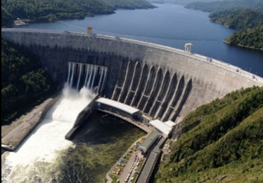

Overview
Shared clean power for East Africa.
The Rusumo Hydroelectric Power Project supplies affordable renewable electricity and stands as a practical example of regional planning, shared infrastructure, and green development.
04 / Energy
A regional renewable-energy project shared by Rwanda, Tanzania, and Burundi.

Overview
The Rusumo Hydroelectric Power Project supplies affordable renewable electricity and stands as a practical example of regional planning, shared infrastructure, and green development.
Project details
Impact